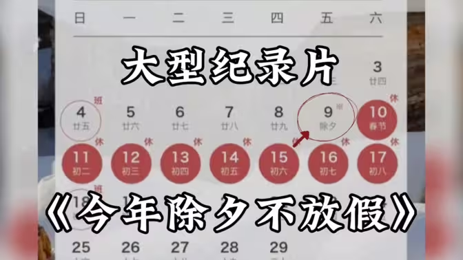

“不过洋节”的呼声，时常被简单归类为“文化自信”或“文化自卑”的站队表态。
但若我们跳出非此即彼的二元争论，回归事实与逻辑的起点，便会发现，许多激辩竟源于一个根本性的误读。
Part 1
官方提倡“不过洋节”？谣言！
很多人都误以为“官方曾提倡不过洋节”，但这是彻头彻尾的谣言。
与这个话题相关的文件，就只有《关于实施中华优秀传统文化传承发展工程的意见》这一个文件，全文关于“节日”的表述只有两句话：
全文无一字提及“抵制”，更无半句指摘“洋节”，相反，通篇贯穿的是“鼓励”、“引导”与“向往”，而非公权力的强力干预。
此外，浙江宣传也曾发文《该怎么看年轻人过“洋节”》，文章立场是：应以自信、包容的态度看待年轻人过“洋节”的现象，理解其追求快乐的本意和活动的本土化特质，同时加强引导，确保其在安全、文明的范围内进行，并最终落脚于大力弘扬和创新发展中华优秀传统节日文化。
大家之所以会产生误读，是因为部分自媒体刻意将“弘扬传统”与“过洋节”塑造为你死我活的“零和博弈”，以此刺激情绪、收割流量。
此外，还有部分基层单位对《意见》的理解和执行不到位，最终闹了个笑话。
既然“抵制”本身是一场基于误读的虚空索敌，那么一个更本质的问题浮出水面：在当下的中国，所谓的“洋节”究竟是什么呢？
答案是，所谓“洋节”，早已不构成任何意义上的文化入侵了。
Part 2
上帝归上帝，凯撒归“限时特价”
网络上的键盘侠还在为“文化防线是否失守”而争得面红耳赤，线下的实体商家其实早已在平安夜的倒数声中，笑纳了年底最后的一波KPI。
与其说洋节是对中国文化的入侵，不如说这是一场中国商业社会对西方符号的反噬。
如果Max Weber在世，看到中国的圣诞节，恐怕也要惊叹于这片土地强大的祛魅能力。
在这里，并没有什么神圣的宗教叙事，只有赤裸裸、热腾腾的“大促立减”。
义乌的圣诞，与耶和华无关
那些高呼“抵制洋节”的人，往往忽略了一个极其荒诞的现实：全世界约80%的圣诞装饰，都产自中国义乌。
在西方，圣诞节是严肃的家庭团聚和宗教仪式；但在中国，它早已发生了一场基因突变。
最典型的例子莫过于“平安果”。这个源于“平安夜”谐音的中国特产，完全是本土水果商贩为了销量而发明的“创新民俗”。
在《圣经》里找不到出处的苹果，被裹上精美的包装纸，卖出了平日两倍的价格。
所谓的“洋节入侵”，到头来还不是“中国制造”的内销，是义乌小商品指数的胜利，更是中国商贩超强造节能力的体现。
圣诞老人的故乡不在北极，而在浙江义乌国际商贸城；赐予苹果神圣含义的不是上帝，而是楼下的水果摊主。
为了供奉心情的洋节
洋节在中国流行，恰恰是因为它被剥离了“教义”，只保留了世俗化的“交易”。
我们不妨观察一下中国年轻人的洋节图鉴：平安夜是用来吃火锅的，圣诞节是用来开房约会的，万圣节是用来cosplay发疯的。这里没有忏悔，没有弥撒，只有满减券、电影票和限定皮肤。
中国社会的强大实用主义，早已消融洋节背后的宗教神性，将其重塑为一个普普通通的消费节点。
如果说西方人过节是为了供奉上帝，那么中国人过节则是为了供奉心情。
这种“拿来主义”不仅不代表文化自卑，反而是一种极其强势的文化自信：我不信你的神，但我可以消费你的节。
既然洋节已经彻底沦为促进内需的工具人，我们又何必对着一个已经被去风险化的商业符号如临大敌？
我们并没有跪倒在西方文化的脚下，我们只是跪在了“半价券”面前。
于是，我们提出一个更深层的文化心理命题：既然洋节不再代表西方价值，那么它究竟为我们提供了何种本土化的情绪价值？
Part 3
不是“崇洋”，是“避难”
在现代生活的强压之下，节日的功能早已从“文化崇拜”转向了“心理自救”。
对于许多在都市夹缝中生存的个体而言，这不是文化阵地的倒戈，而是情绪上的带薪假。
传统节日：温情脉脉的审计
我们当然尊重传统节日的厚重与温情，它是族群的根脉。
但在现实话语中，这种厚重对部分年轻人而言，正逐渐演变成一种显性的压力。
回到家乡，传统佳节往往伴随着高强度的“人生审计”。
从职业升迁到婚育进度，从收入比拼到人情世故。
来源：电视剧《他为什么依然单身》
在繁琐的礼仪与长辈的凝视中，个体必须磨平棱角去填充那个名为“圆满”的模具。
这种包裹在“团圆”外壳下的社会化评价，让本该休息的假期，变成了另一场必须严阵以待的期末考试。
洋节：低门槛的心理补偿
相比之下，洋节在中国社会的语境中，因其“去神圣化”而展现出一种迷人的轻盈感。
它没有历史包袱，没有家族义务，更没有对未来规划的终极审问。
它被简化成了一个个具体的消费场景，是可以搞怪的妆容、或是纯粹的朋友聚会。
这种“无根性”恰恰提供了最宝贵的自由空间。洋节在这里扮演的是“去中心化”的社交避难所，它允许你只作为一个独立的个体，在平庸的日常中，合法地“浪费”时间。
不庆祝上帝的诞生，而寻找不被催婚的周四。
我们需要生活的排气阀
归根结底，文化竞争的本质是生活方式的竞争。
在生活的高压锅里，人们需要一个排气阀。
如果传统节日代表着“向上负责”的伦理义务，那么洋节则代表着“向下兼容”的娱乐自由。
这种功能性的替代，正是因为洋节提供了一块可以临时喘息、无需反思、只负责快乐的精神飞地。
由此可见，年轻人对洋节的拥抱，本质上是一种文化功能性的“用脚投票”。这种选择，映照出的恰恰是部分传统节日在现代社会中的功能缺失。面
对这种此消彼长，一种基于恐惧的“文化洁癖”开始蔓延。然而，排外与封闭，真的等于文化强大吗？
Part 4
文化洁癖并非强者心态
急于为文化拉起“警戒线”、试图清理一切外来符号，表面上是捍卫，实则是心虚。
不要弱者防线
文化洁癖往往是缺乏底气的表现。
真正的强者从不担心被“污染”，只有对自己文化根基感到焦虑的个体会对每一个飘进窗口的异质符号如临大敌。
试图通过物理隔离来维持纯洁性，本质上是在构建一座名为“传统”的孤岛。
然而，文明的强韧不在于拒绝杂质，而在于它是否具备消融杂质的深度。
唯有弱者才追求绝对的“无菌”，默认了外来文化是致命的病毒，而自己已经失去了免疫力。
而要主场心态
一个自信的文化体，本质是一个开放的生态。
它敢于直面冲突，更敢于在碰撞中将其内化。
这种转化力是一个文明最高级的生存技能。它能迅速将坚硬的、异质的外来符号拆解、重组，最终使其成为自身肌体的一部分。
如果我们因为恐惧“异物感”而拒绝接触，那无异于作茧自缚。
我们并没有接受西方的宗教叙事，而是彻底剥离了洋节的神圣性。
我们将圣诞节解构为“平安果”和“购物节”，将万圣节过成年轻人的cosplay峰会，这些节日就不再是异质文明的先锋，而是成了服务于中国消费者社交需求的道具。
这种“唯我所用”的傲慢，才是最真实、最高级的文化自信。
文化竞争的终局之战，不在于我们能否禁绝一个圣诞，而在于我们能否创造出比它更具吸引力的节日体验。
Part 5
让传统节日变“好玩”
才是最高级的文化反击
有人一边高喊“弘扬传统”、“抵制洋节”，另一边，却曾用一纸公文将除夕——这个民族情感浓度最高的时刻——从法定假日中剔除。
某些所谓的“文化保卫战”所捍卫的，往往不是活生生的文化体验，而是一个被抽象化、符号化，甚至可被政策随意挪用的空洞概念。

这难道不是最荒谬的文化行为艺术吗？当维系民族情感最核心的仪式，都需要民众在请假、调休和老板的“恩准”中艰难争取时，我们高喊的“文化自信”，底气究竟从何而来？
值得庆幸的是，民意的回声终被听见。2024年11月，国务院明确自2025年1月1日起，“春节，放假4天（农历除夕、正月初一至初三）”。除夕的法定假日地位得以回归。
传统节日的核心价值根植于人性化的时间安排，任何忽视这一点的“顶层设计”都是空中楼阁。
除夕放假的“回归”是一个起点，而非终点。 它纠正了一个基础性的错误，但更艰巨的任务在于：如何让除夕，以及每一个传统节日，从“不得不过”的义务，变为“渴望再过”的期待。
这要求我们勇敢地将节日的部分定义权和创意权，交给年轻人， 让他们用短视频、剧本杀、沉浸式戏剧、潮流装置艺术，去重新翻译、解构和诠释古老的仪式。
当我们可以坦然而不必敏感，可以欣赏而不必皈依，可以祝福而不必焦虑时，那便是真正的强大。在此意义上，一句基于善意与快乐的“圣诞节快乐”，本身就已是一种温柔而坚定的“文化反击”——它证明我们有足够的自信，在纷繁的世界文化图景中，既不迷失自我，亦能欣然共庆。
MERRY CHRISTMAS
最后，祝大家圣诞节快乐！愿我们都有能力，把每一个日子——无论是东方的还是西方的——都过成自己由衷幸福的样子。


发表您的看法